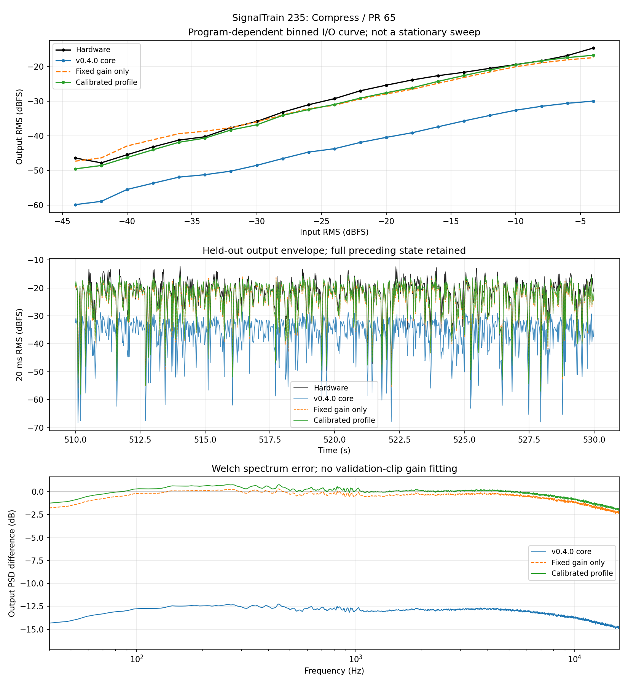
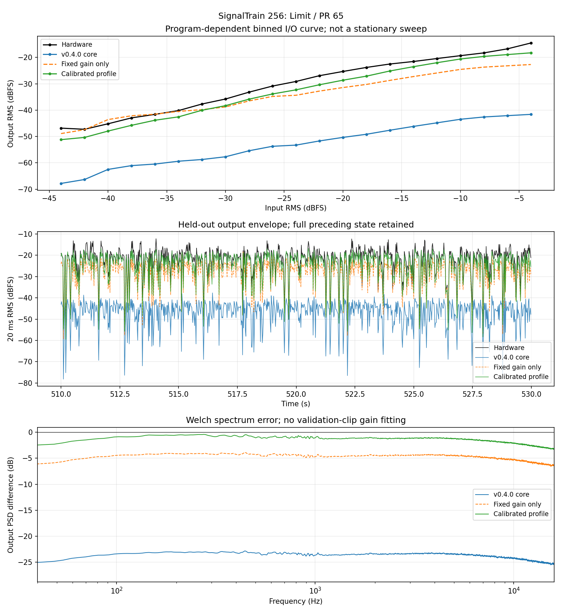
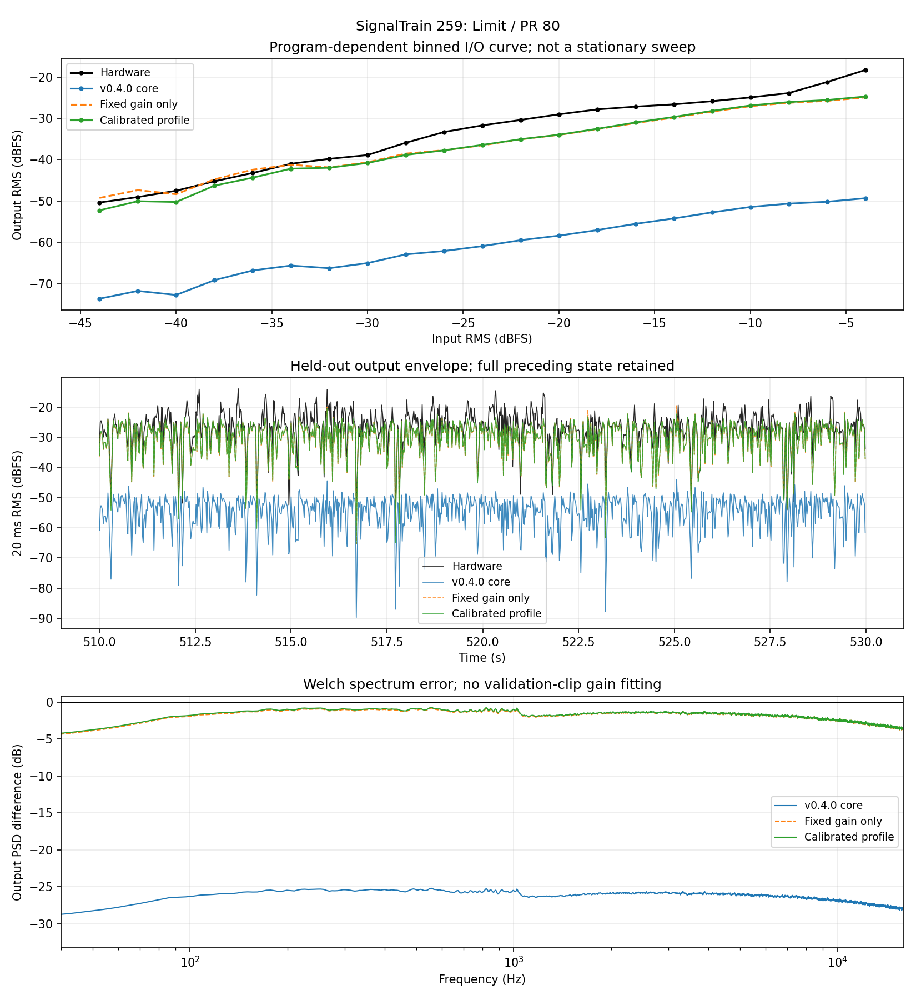

完整说明和 CSV 在同目录 REPORT.zh-CN.md。
# SignalTrain 2A 校准与误差报告 日期：2026-11-16。基线：LAssassin-76 v0.4.0 的实际光电 DSP 核心。 **本报告是三个工作点的离线校准，未改动已发布插件默认声音。不能将结果换算成硬件还原度百分比。** 来源：[SignalTrain LA2A Dataset 1.1](https://zenodo.org/records/3824876)，Benjamin Colburn / Scott Hawley；记录许可 CC BY 4.0。 选用官方 Test 目录的 235、256、259，重新按时间划分为开发子集；不称为官方独立测试集成绩。 ## 验证结果 下表均来自未参与拟合的时间段；格式为 **原模型 → 校准候选**。包络误差单位 dB，越低越好。ESR 是误差能量/参考能量，并非相似度百分比。 | 工作点 | 包络 RMSE | 包络 MAE | 波形 ESR | 频谱 RMSE | 去电平频谱形状 RMSE | |---|---:|---:|---:|---:|---:| | Compress / PR 65 | 14.542 → 2.824 | 14.309 → 1.980 | 0.676 → 0.119 | 13.550 → 0.944 | 1.043 → 0.939 | | Limit / PR 65 | 25.069 → 3.586 | 24.891 → 2.758 | 0.900 → 0.151 | 24.061 → 2.016 | 1.259 → 0.951 | | Limit / PR 80 | 28.487 → 5.118 | 28.270 → 3.990 | 0.934 → 0.266 | 26.637 → 2.319 | 2.046 → 1.968 | ## 固定增益对照 只用训练片段求一个固定输出补偿，验证时冻结。这样可区分单纯电平匹配和改变压缩控制的效果。 | 工作点 | 仅固定增益包络 RMSE | 校准候选包络 RMSE | 仅固定增益 ESR | 校准候选 ESR | |---|---:|---:|---:|---:| | Compress / 65 | 3.141 | 2.824 | 0.134 | 0.119 | | Limit / 65 | 6.666 | 3.586 | 0.328 | 0.151 | | Limit / 80 | 5.230 | 5.118 | 0.274 | 0.266 | **解读：** Compress/65 和 Limit/80 的改善主要来自参考电平匹配，改变压缩映射后的额外收益较小。Limit/65 相对固定增益对照有明显改善。三个候选仍有数 dB 包络误差，不能称为完成真机复刻；仅覆盖这三个工作点，未回写发布版。 [三页测量图 PDF](measurement-plots.pdf) · [离线候选参数](candidate-profiles.json) ## 拟合参数与收敛 拟合有效 PR 和输出 trim，输入 trim 固定为 0 dB，防止用管级过载替代光电压缩。它们是匹配该数据集的有效坐标，并非真机旋钮值。输出 trim 位于染色之后；本插件 Gain 旋钮位于染色之前，两者不可互换。 | 工作点 | 有效 PR | 输入 trim dB | 输出 trim dB | 训练包络 RMSE 前→后 | 优化器成功 | |---|---:|---:|---:|---:|---| | Compress / 65 | 34.4746 | 0.0000 | 2.2418 | 12.642 → 0.867 | True | | Limit / 65 | 20.9498 | 0.0000 | -0.0795 | 19.960 → 0.773 | True | | Limit / 80 | 53.7154 | 0.0000 | 10.6020 | 24.417 → 0.938 | True | ## 方法与解读 - 每组录音长 900 秒、44.1 kHz 单声道。校准使用 30–60、120–150、210–240 秒；验证使用 330–390、510–570、690–750、810–870 秒。 - 拟合时以 11.025 kHz 连续运行至 240 秒；最终误差以原生 44.1 kHz 从头连续运行完整 900 秒计算。评价窗口前的光电记忆保留。 - 检测高通和 HF Emphasis 关闭，Gain=0，单声道复制成立体声链接。没有 1176、Mix、Auto Gain 或外层插件过采样；因此不是 VST3 完整链路测试。 - 四处延迟检查（1、100、350、700 秒）均要求相关峰为零整数采样偏移；未进行验证集增益匹配或时间重对齐。未估计亚采样相位偏移。 - 包络为不重叠 20 ms RMS，绝对门限 -55 dBFS。频谱为 Welch PSD，8192 点 Hann 窗；标量统计只计 40 Hz–16 kHz、参考谱峰下 60 dB 以内的频点。 - 曲线是验证节目按输入 RMS 分箱后的输出中位数，包含历史影响，不能据此声称测出了真机的稳态 ratio/knee。 - 图中的包络比较不是独立的起音/释放阶跃实验；没有足够证据给出真机 Attack、Release 或 15 秒恢复尾巴的拟合精度。 - 频谱差包含增益、非线性、噪声、相位与动态造成的影响，不等同于频响或单独的谐波失真。 - 校准只优化包络，频谱形状和波形未作为优化目标；它们可能改善较少，甚至变差。输出 trim 和有效 PR 存在相关性，不应解释成物理参数识别。 - 三个工作点不足以生成可靠的全旋钮范围映射，尤其没有 Compress/80、其它 PR 和 HF 开关数据。暂不据此改写发布版声音。


